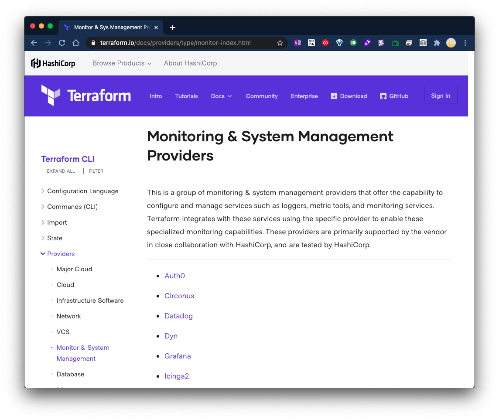
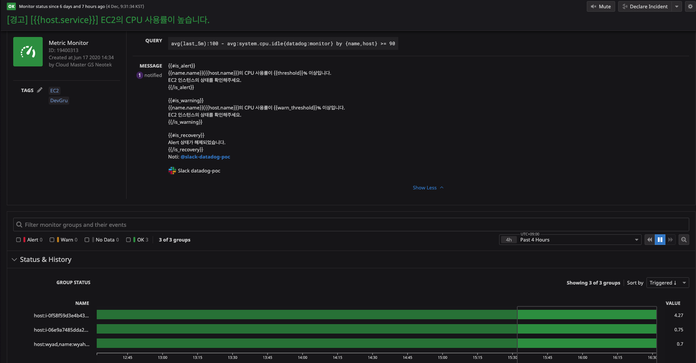

여러 클라우드 환경에서 이곳저곳 산재되어 있는 클라우드 리소스들을 통합적으로 모니터링이 가능하게 해주는 모니터링 솔루션인 Datadog을 알아 보자.
Datadog은 Monitor 기능을 통해 리소스들에 문제가 발생 시 알람을 받을 수 있도록 하는 기능을 제공 한다.
여러 서비스를 신규 런칭을 위해 이러한 알람을 새롭게 생성할 때 마다 Datadog Console에서 마우스로 직접 할 때의 과정은 여간 귀찮은게 아니다. -_-;
여러 서비스에 대해 알람을 설정할 때마다 마우스로 직접하려고 하니 미쳐 날 뛸 뻔한 경험을 겪어왔다. 이러한 흔히 말하는 노가다성 작업을 할 때 마다 시간을 줄일 수 있는 방법이 있나 여러 고민을 하게 됬다.
고민 하던 와중에, Terraform으로 가능하지 않을까? 생각하게 되었고 Terraform 홈페이지에 들어가 제공되는 provider 목록을 살펴 보았다.
짜잔! Datadog이 있.었.다.!!

1. Terraform 설치
Terraform을 사용하기 위해서는 실행할 컴퓨터에 Terraform을 설치해야 한다.
Terraform 설치는 공식 문서를 참고하여 설치 한다.
2. Terraform 코드 작성
자, 이제 알람을 생성 해보자.
VM의 CPU 사용율에 대해 모니터링하기 위한 알람을 생성 해보자.
먼저, Terraform 코드를 작성 한다.
1)provider를 정의하기 위한 datadog.tf 파일을 생성 후, 아래와 같이 작성한다.
datadog.tf
provider "datadog" {
api_key = "${var.datadog_api_key}"
app_key = "${var.datadog_app_key}"
}
변수를 지정하는 var.tf 파일을 생성 후, 아래와 같이 작성한다.
var.tf
variable "datadog_api_key" {}
variable "datadog_app_key" {}
2) Datadog에 데이터를 전달하려면 API Key/ Application key가 필요하다.
해당 Key를 확인하는 방법은 아래와 같다.
- Datadog Console에 로그인
- Integrations > APIs
API Key는 기본적으로 활성화 되어 있다. Application Key는 Create 선택하여 생성 해준다. Note. 여러개의 Key를 생성할 경우가 있는데, 이때 해당 키들의 구분을 위한 이름을 지정할 수 있다. Application Key 이름은 생성후, 수정할 수 없으니 신중하게 설정하는 것을 권장한다.
API Key를 정의하기 위한 secret_key.tfvars 파일을 생성 후, 아래와 같이 작성한다.
Note. "" 영역안에 자신의 각 Key를 입력한다.
secret_key.tfvars
datadog_api_key = "<API Key를 입력하세요>"
datadog_app_key = "<APP Key를 입력하세요>"
자, 본격적으로 VM의 CPU 사용율 알람을 위한 모니터를 작성 해보자.
모니터를 정의하기 위한 monitor-ec2.tf 파일을 생성 후, 아래와 같이 작성한다.
Note. tf 파일 이름은 정의된 이름은 없으며, 구분하기 쉽게 작성하는 것을 권장 한다.
VM의 CPU 사용율 알람을 위해 작성된 완성 코드는 아래와 같다.
monitor-ec2.tf
resource "datadog_monitor" "ec2_cpu" {
name = "[경고] [{{host.service}}] EC2의 CPU 사용률이 높습니다."
type = "query alert"
query = "avg(last_5m):100 - avg:system.cpu.idle{monitor:datadog} by {name,host} >= 90"
message = <<EOF
{{#is_alert}}
{{name.name}}({{host.name}})의 CPU 사용률이 {{threshold}}% 이상입니다.
EC2 인스턴스의 상태를 확인해주세요.
{{/is_alert}}
{{#is_warning}}
{{name.name}}({{host.name}})의 CPU 사용률이 {{warn_threshold}}% 이상입니다.
EC2 인스턴스의 상태를 확인해주세요.
{{/is_warning}}
{{#is_recovery}}
Alert 상태가 해제되었습니다.
{{/is_recovery}}
Noti: @slack-datadog-poc @noc@gscdn.com
EOF
tags = ["EC2"]
notify_audit = false
locked = false
timeout_h = 0
include_tags = true
require_full_window = false
new_host_delay = 300
notify_no_data = false
renotify_interval = 0
escalation_message = ""
thresholds = {
critical = 90
warning = 80
}
}
뭔가, 장황하게 길다 -_- 겁을 내지마시오..!
몇번 작성해보면 이해하기 쉬운 코드 이다. Terraform은 HCL(HashiCorp Configuration Language)라는 코드 문법을 사용 한다. Datadog에 아직 익숙하지 않다면, 먼저 Console에서 직접 모니터들을 만들어 보고 Terraform을 이용하여 모니터를 생성하는 것을 권장한다. 그 이유는 위에 코드를 보면 알겠지만, 각 옵션들의 기능들을 이해해야 하는데, 직접 모니터를 만들면 해당 옵션 값에 대해 이해 하기가 쉽다.
resource "datadog_monitor" "ec2_cpu" {
resource는 예약어 이다.
“datadog_monitor"는 프로바이더가 정의한 리소스 종류를 말한다.
여기서 Datadog의 알람 기능인 Monitor를 생성하는 것이기에 datadog_monitor 이다.
terraform은 tfstate 라는 이름으로 상태를 저장한다. “ec2_cpu” 라는 유니크한 리소스 이름으로 저장하여 테라폼 내부에서 참조하기 위해 사용 된다.
{} 이하부터는 속성 명:속성 값으로 이루어진다.
name = "[경고] [{{host.service}}] EC2의 CPU 사용률이 높습니다."
type = "query alert"
query = "avg(last_5m):100 - avg:system.cpu.idle{datadog:monitor} by {name,host} >= 90"
name 은 모니터의 제목이다.
type 은 모니터(알람)의 유형으로서 많이 쓰이는 종류는 임계치 기반의 알람인 query alert 이다.
그밖에 종류는 다음과 같으며, 자세한 내용은 첨부된 Datadog 문서를 참고
Alert 종류 [Link:] https://docs.datadoghq.com/monitors/monitor_types/
query 는 모니터(알람)을 평가할 매트릭(Metric=지표)을 말한다.
작성된 쿼리를 풀어 말하자면, manged:datadog 태그를 가진 인스턴스들 중 cpu idle 값에 100을 뺀 값에 대해 마지막 5분 평균 값이 90과 같거나 클 경우 알람이 울리게 하라는 쿼리이다.
메시지 정의
message = <<EOF
{{#is_alert}}
{{name.name}}({{host.name}})의 CPU 사용률이 {{threshold}}% 이상입니다.
EC2 인스턴스의 상태를 확인해주세요.
{{/is_alert}}
{{#is_warning}}
{{name.name}}({{host.name}})의 CPU 사용률이 {{warn_threshold}}% 이상입니다.
EC2 인스턴스의 상태를 확인해주세요.
{{/is_warning}}
{{#is_recovery}}
Alert 상태가 해제되었습니다.
{{/is_recovery}}
Noti: @slack-datadog-poc
EOF
message는 알람 받을 메시지에 대한 내용이다.
<<EOF EOF는 메시지 시작과 끝을 정의 한다.
{{#is_alert}}{{/is_alert}}는 threshold(임계치) 설정 중 Alert 상태가 발생 하였을 때 받을 메시지를 정의한 내용이다.
{{}} 로 정의하는 부분은 Terraform 문법이 아닌, Datadog 메시지를 정의할 때 사용하는 내용이다. Datadog의 Monitor에서 메시지를 작성할 때 마크다운(Markdown) 문법도 사용할 수 있다.
{{#is_warning}}{{/is_warning}}는 threshold(임계치) 설정 중 warning 상태가 발생 하였을 때 받을 메시지를 정의한 내용이다.
{{#is_recovery}}{{/is_recovery}}는 정의된 threshold(임계치) 밑으로 도달할 때 회복됬다는 메시지를 전달 받을 내용이다.
마지막으로 @를 이용하여 슬랙이나, e-mail로 해당 메시지를 전달 받을 수 있다.
@slack 했을 때 나오지 않을 경우, 먼저, Slack Integration을 진행 하자.
Monitor(알람)의 설정 옵션
tags = ["EC2"]
include_tags = true
notify_audit = false
locked = false
timeout_h = 0
require_full_window = false
new_host_delay = 300
notify_no_data = false
renotify_interval = 0
escalation_message = ""
thresholds = {
critical = 90
warning = 80
}
}
tags = ["EC2"] 는 운영을 하다보면 알람을 받을 각종 Monitor가 생성이 된다. 해당 Monitor들을 쉽게 필터할 때 사용하는 태그 이다.
태그를 이용할 것을 권장 한다.
include_tags = true
thresholds = {
critical = 90
warning = 80
}
위에서 언급한 thresholds(임계치) 값 정의하는 부분 이다.
Terraform Workflow
Write > Plan > Create
- Write 각 생성할 리소스를 코드로 정의 한다. 코드 작성 완료후 terraform init을 통해 Provider의 플러그인을 설치 한다.
terraform init
- Plan
terraform plan
Terraform으로 생성할 리소스를 정의한 내용에 대해 확인하는 단계이다. 실제 Provider에 리소스가 배포 되기 전에, 또는 변경할 부분에 대해 tfstate=상태 와 비교하여 변경될 부분을 확인 해준다.
- Create(Apply)
terraform apply
Provider에 리소스가 실제로 배포되는 단계이다.
Datadog Console에서 좌측의 Managed Monitor 를 선택 후, 생성된 모니터를 확인 해보자.
아래 화면과 같이 생성된 모니터를 확인 할 수 있다.

야!너두 할수 있.다.!
good luck:)